Open-source handwriting synthesis · MIT · updated 9 November 2026
Your hand, on every page.
Inkcadence learns a handwriting style from your own pages and writes new pages in it. Classical letterforms run in the browser, so the photos stay on your device. Neural writing is optional and falls back to the classical writer when it is not available.
How Inkcadence works
Two inputs make a style pack. Old pages teach the look. A filled character sheet teaches the letters. The writer then lays your text out on paper.
Samples
Upload one to eight pages. Inkcadence measures slant, stroke width, line spacing, and pen colour.
Glyph sheet
Print the template, write every character, and upload a flat photo. The grid auto-aligns.
Quality
A score from 0 to 100 reports coverage and stroke confidence. Preview a sentence before you save.
Style pack
Save the letterforms and ink stats. Keep more than one hand in the sidebar.
Write
Type the page. Choose auto, classical, or neural. Headings start with #.
Export
Download PNGs or open Print / PDF. Leave the AI watermark on when the page could be mistaken for unaided handwriting.
Full walkthrough
This recording is the real app: sign up locally, train on the repository’s sample pages and glyph sheet, score the pack, save it, and render a page. The last frame switches to the dark theme with the same result.
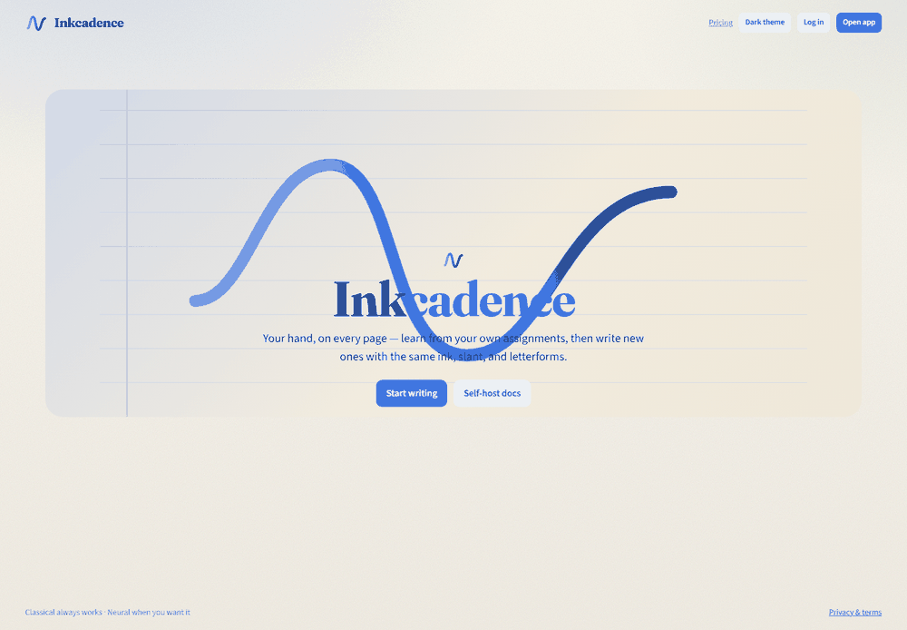
Light and dark, with the result
The same account trained a pack named “Blue pen notes”: 3 sample pages, 80 of 80 letterforms, quality score 89. The rendered page is the Write tab output, not a mockup.
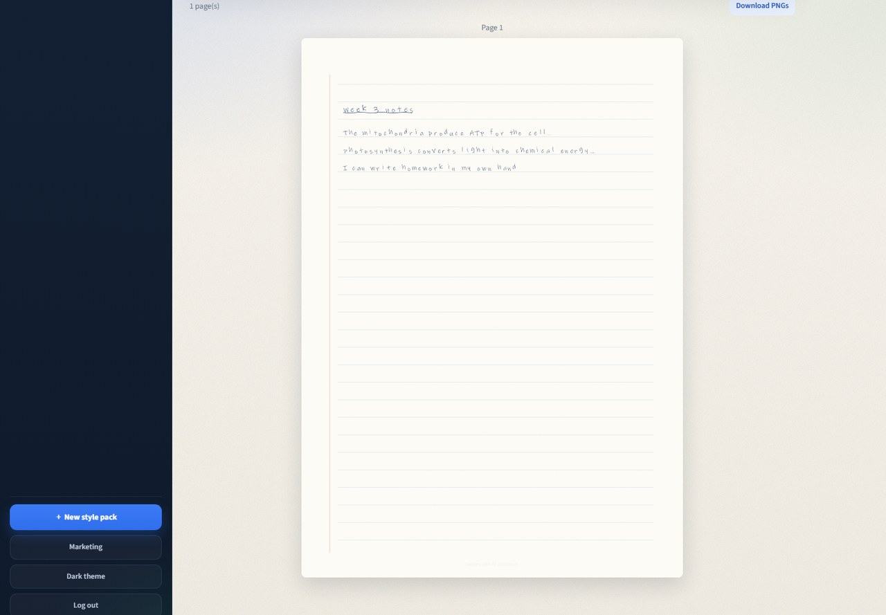
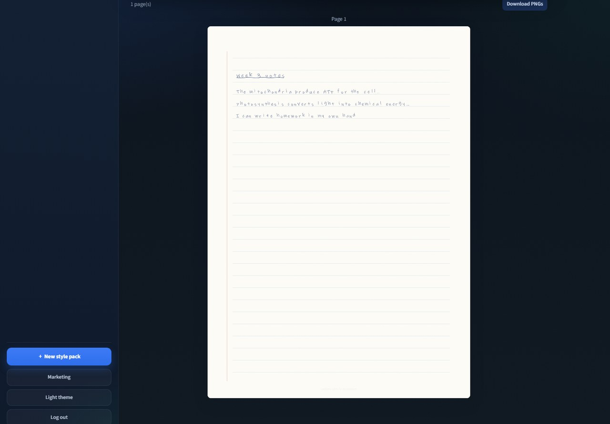
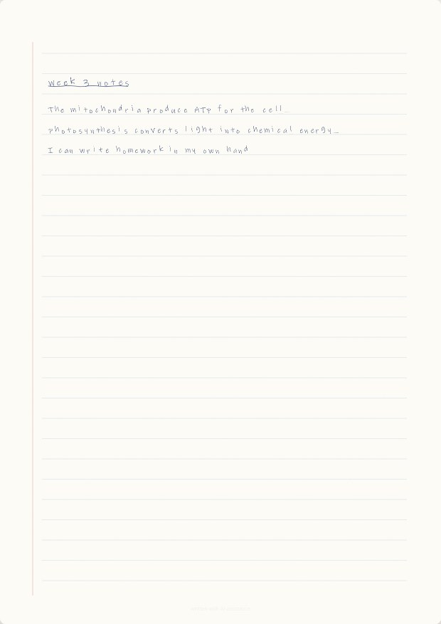
Workflows
The product path is samples, sheet, score, pack, write, export. The repository path is test, then publish this site.
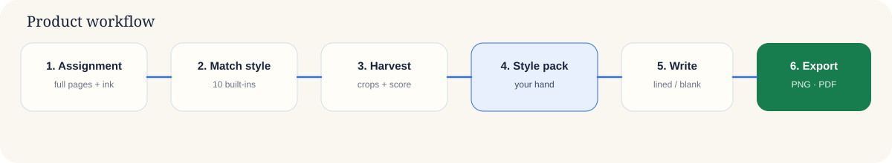
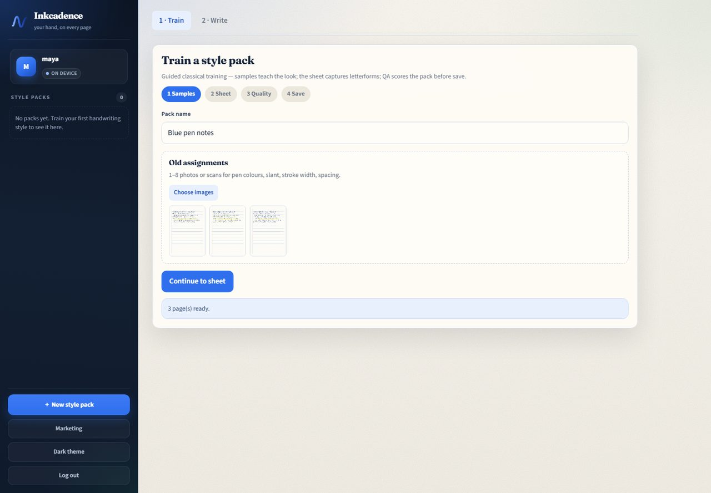
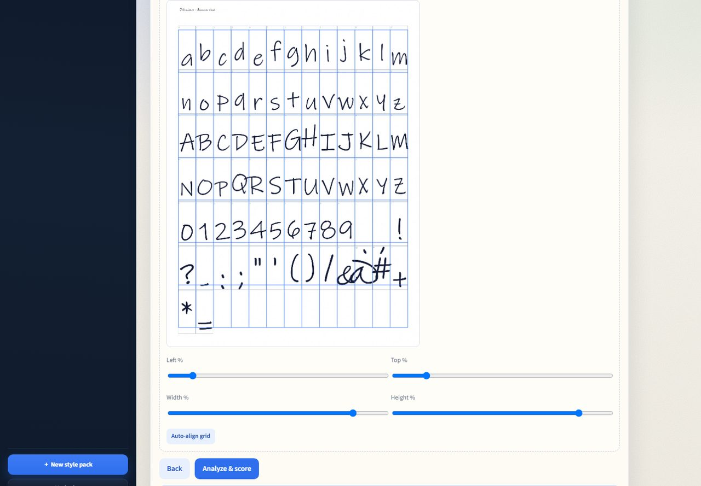
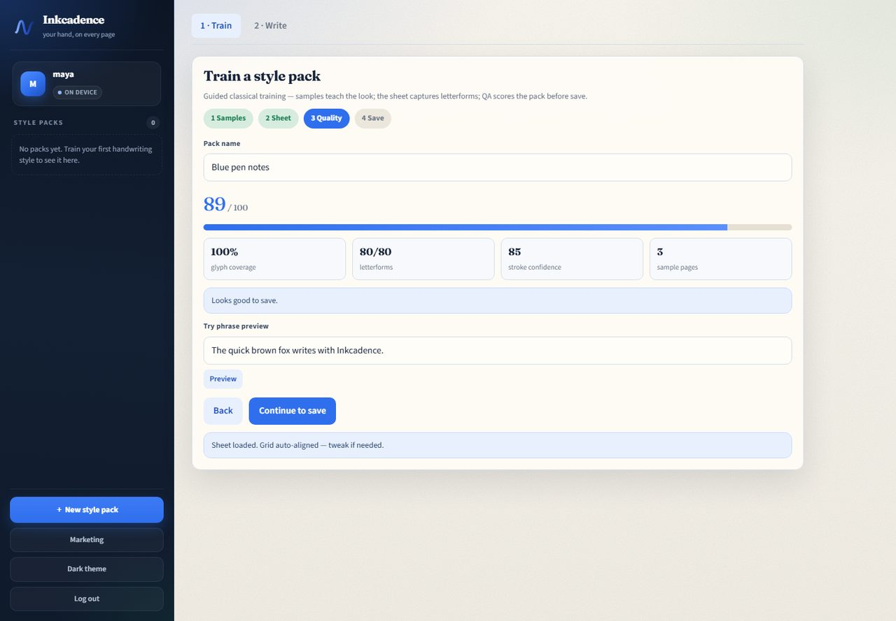
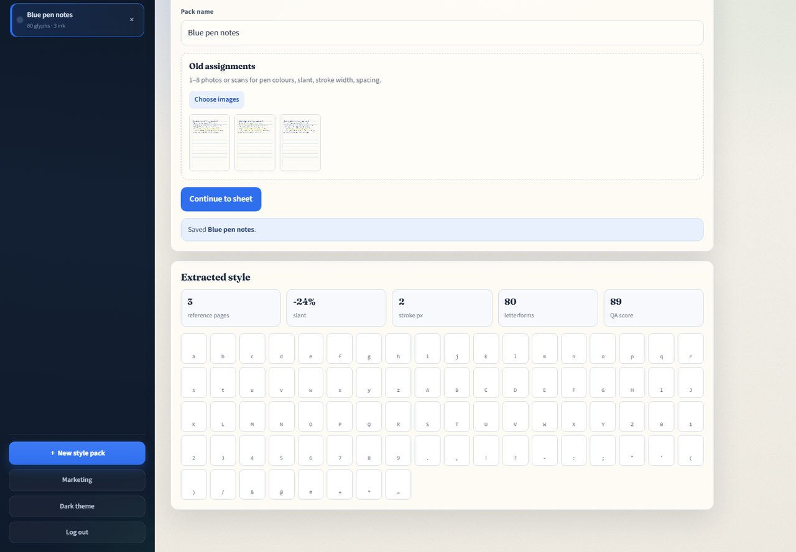

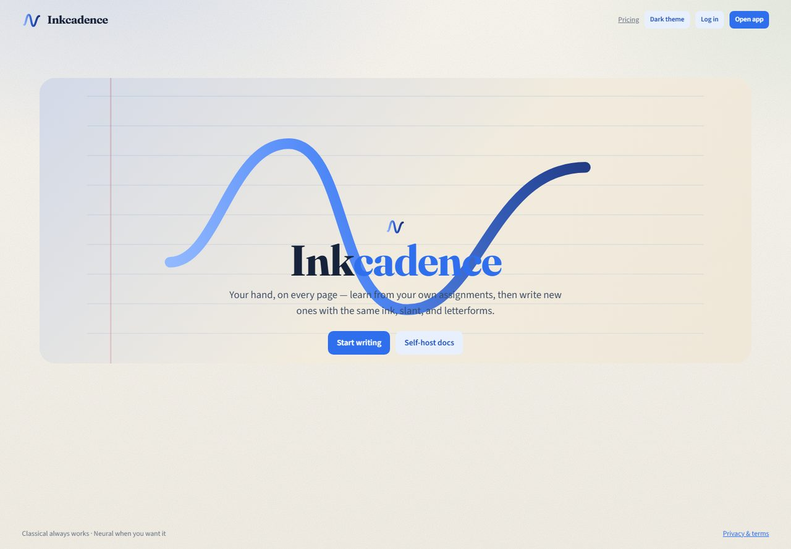
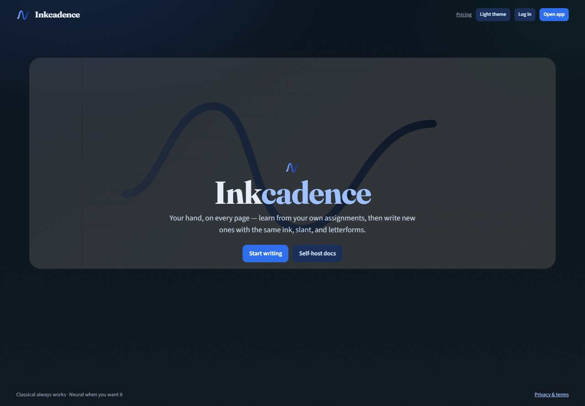
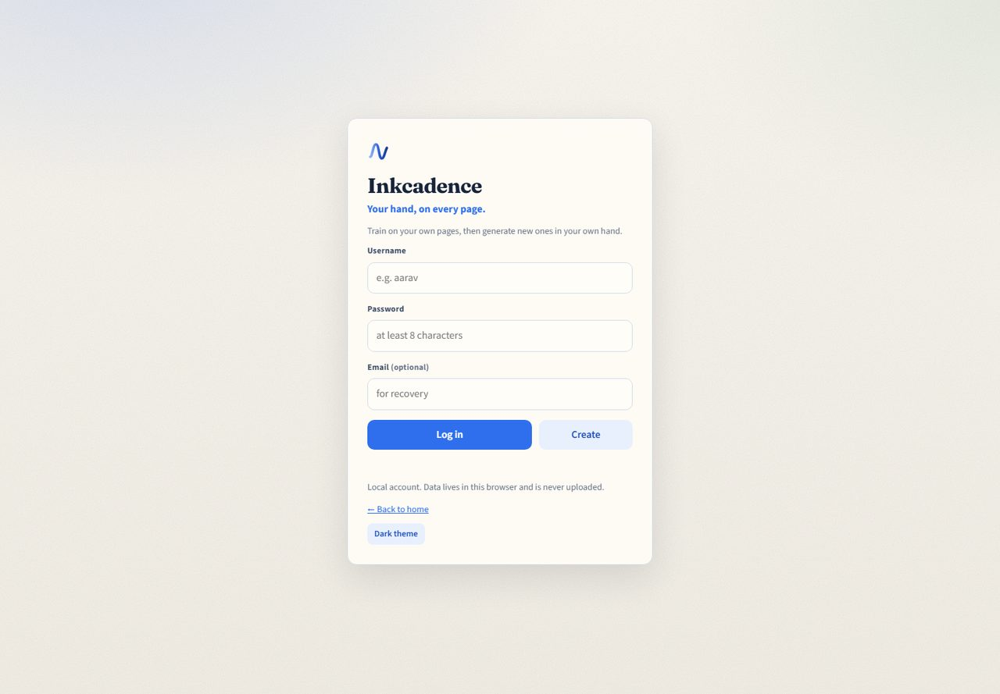
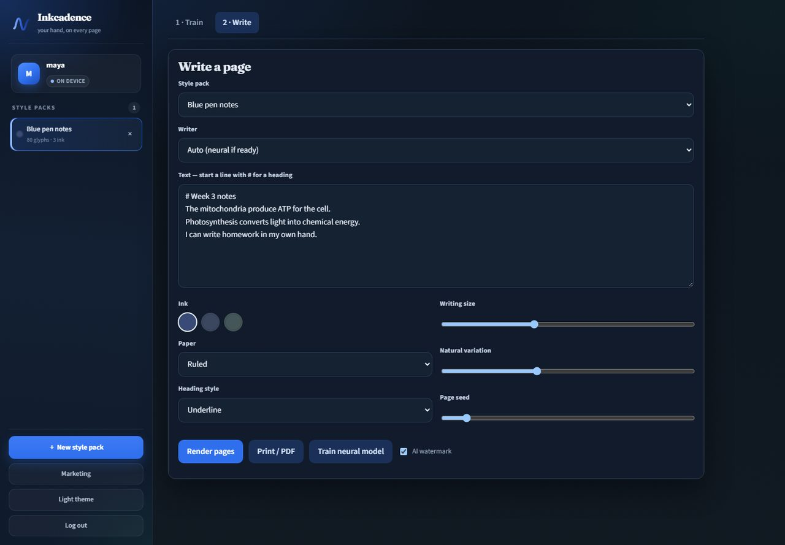
Classical, neural, self-host, demo
| Mode | What it does | What it needs |
|---|---|---|
| Classical | Stamps your captured glyphs with measured slant, stroke, spacing, ink, and jitter. | A browser. No server. |
| Neural | Personalizes one pack with a small embedding. Falls back to classical if the service is down. | The optional ml/ service. |
| Self-host | Same app, plus accounts and pack sync on your Postgres database. | Docker Compose, or Node for development. |
| This site | The guide you are reading, plus the classical app at /app/. | Nothing but the browser. |
Questions and answers
These are the full answers. They match the behaviour of the app in this repository as of 9 November 2026.
What is Inkcadence?
Inkcadence is an open-source app that learns a handwriting style from a person’s own pages and writes new pages in that style. Classical glyph synthesis is the default and runs in the browser. A small optional neural model can personalize a style pack and falls back to classical writing when it is unavailable.
Who is Inkcadence for?
Inkcadence is for people who want notes, letters, or practice pages in their own hand, and for operators who want to self-host that workflow. It is not a tool for forging signatures, identity documents, certificates, or graded exams.
How does Inkcadence learn handwriting?
Sample pages teach the look: pen colours, slant, stroke width, and line spacing. A filled glyph sheet teaches the letterforms. Those measurements become a style pack, which the writer uses to stamp characters onto ruled, grid, or plain paper.
What is a style pack?
A style pack is the saved profile for one handwriting style. It holds the captured glyphs, any missing characters, pen colours, paper colour, and stats such as slant, stroke width, and line gap. You can keep more than one pack.
What should I upload as sample pages?
Upload one to eight photos or scans of your own writing. Flat lighting and a page that is mostly your ink, not highlighter, give a cleaner pen colour and stroke estimate. The app accepts common browser image types.
What is the glyph sheet?
The glyph sheet is a printable grid. You write one character per cell, photograph it flat, and upload it. Inkcadence auto-aligns the grid and lets you nudge the left, top, width, and height percentages if the lines are off.
How many characters does the sheet capture?
The sheet covers lowercase and uppercase letters, digits, and the punctuation set used by the classical writer. A full sample run in this repository captured 80 of 80 letterforms.
What does the quality score mean?
The score is 0 to 100. It mixes glyph coverage, stroke confidence, whether pen colours were found, and how many sample pages you added. The sample walkthrough on this site scored 89 with 100 percent coverage. A low score means the classical writer has fewer real letterforms to stamp.
Can I preview a sentence before saving?
Yes. On the quality step, type a phrase and press Preview. Inkcadence renders that phrase with the draft pack so you can judge the hand before you save it.
How do I write a new page?
Open the Write tab, pick a style pack, type the text, and press Render pages. Start a line with # to make a heading. Then download PNGs or use Print / PDF.
What do writing size, variation, and seed change?
Writing size scales the letterforms. Natural variation adds jitter so repeated letters are not identical. Page seed picks a repeatable random stream, so the same seed recreates the same jitter.
How do I print or save a PDF?
Render the pages, then press Print / PDF. The browser print dialog can save a PDF. Each page is laid out as A4. You can also download PNG files.
Are my photos uploaded?
Not on the default path. Sample photos and the glyph sheet are analysed in the browser. If you connect your own API, only the extracted style-pack JSON is synced. Source photos are not stored server-side.
Where do accounts and style packs live?
On the GitHub Pages demo and whenever no API is configured, accounts and packs stay in this browser, in IndexedDB with a localStorage fallback. A self-hosted or SaaS API can sync the pack JSON for that account.
What is the difference between classical and neural writing?
Classical writing stamps the letterforms captured from your sheet and applies your measured slant, stroke, spacing, and ink. Neural writing, when a per-pack model is ready, personalizes further through the optional ML service. It does not train a giant foundation model.
What happens if the neural service is down?
Auto mode uses neural output only when the service returns it. If the model is missing or the service is down, Inkcadence renders with the classical writer instead. Classical writing does not need the ML service at all.
Can I self-host Inkcadence?
Yes. Docker Compose starts Postgres, Redis, and the API. An optional Compose profile starts the neural service. The same repository also runs with an in-memory API for development, or as a static page with no server.
Is there a hosted plan?
The software supports a SaaS mode with Stripe billing, email verification, quotas, and a watermark policy. The public GitHub Pages site is the free classical app, not a paid hosted account.
How much does Inkcadence cost?
The project is MIT licensed and the browser app is free. Self-hosting costs whatever you pay to run your own machine or database. Hosted Pro and Team plans are optional and configured by whoever operates the SaaS deployment.
Does the GitHub Pages demo need a server?
No. The demo at /app/ runs the classical writer entirely in your browser. Create a local account, train a pack, and render pages without an API. Neural training needs the separate ML service, so the demo stays classical.
Can I use Inkcadence offline?
After the page has loaded, classical training and writing do not need a network. The first visit downloads the app. A self-hosted API is only required when you want synced accounts or neural jobs.
What is the AI watermark?
The watermark is a small disclosure on the rendered page that the handwriting was assisted. Leave it on when a reader might think the page was written by hand without software. SaaS deployments can force it.
Can I use pages for signatures, exams, or official documents?
No. Do not use Inkcadence to forge signatures, identity documents, certificates, or work that is supposed to be written under exam conditions. The project documents this limit in the app’s privacy and terms.
Which browsers work?
Current Chrome, Edge, Firefox, and Safari work. The app needs canvas, IndexedDB or localStorage, and modern JavaScript. A keyboard and a way to upload images are required to train a pack.
Which image formats can I train on?
Use any image type your browser can decode, typically JPEG, PNG, or WebP. Photograph the page flat, with even light, so the grid and the ink are readable.
Can I keep more than one handwriting style?
Yes. Each style is a separate pack in the sidebar. Select the pack you want before you render. You can delete a pack from its row.
How do I delete a style pack?
In the app sidebar, use the delete control on that pack’s row and confirm. Deleting removes the pack from this browser, or from your server when the account is synced.
Does Inkcadence detect pen colour?
Yes. Sample pages are clustered into pen and faint colours. The Write tab shows those inks as swatches, and you pick the one to render with. Highlighter-like bright strokes are treated as less reliable ink.
What paper styles can I render?
Ruled, grid, and plain. You can also set the heading treatment to underline, double underline, or none. The page colour comes from the paper measured in your samples.
Is Inkcadence open source?
Yes. The license is MIT. The repository is mafzalkalwardev/inkcadence and includes the browser app, the API, and the optional ML service.
What does continuous integration check?
On every push to main, GitHub Actions installs dependencies, checks syntax, runs the API and engine tests, builds the Vite app, and builds the API and ML Docker images. The Pages workflow tests again, then publishes this site and the app.
How is the live site published?
The Pages workflow assembles this landing page, the screenshots, and the built browser app, then deploys them with GitHub Pages. The site root is the guide. The app lives at /app/.
Does the neural service train a large foundation model?
No. The ML service personalizes a lightweight style embedding for one pack. Without PyTorch it can still mark a small embedding checkpoint ready. If that service is absent, classical writing continues.
Are source photos stored on the server?
No. The documented server path stores style-pack JSON, not the photographs. Consented neural fine-tunes in a SaaS deploy may use object storage, and that path is separate from the default browser flow.
How are passwords stored?
API passwords are hashed with scrypt, and session tokens are hashed at rest. The local demo keeps the account in this browser. Use a unique password even for a local account.
Will the result look like a normal font?
No. A font repeats the same outline. Inkcadence stamps your captured glyphs and varies position and size with jitter, so repeats are uneven. Characters you left blank on the sheet fall back to a simple drawn form, which is why the quality score matters.
What are the limits of classical synthesis?
Classical writing can only reproduce characters it captured, plus a plain fallback for gaps. It does not invent a new cursive connection the way a large generative model might. Joined-up handwriting, messy photos, and empty cells all lower fidelity. The score and the preview are there so you can see that before you rely on a pack.
Does the app have a light and a dark theme?
Yes. Use Dark theme or Light theme in the app, or the control on this page. The choice is saved in this browser and shared with the app on the same site. The rendered paper stays paper-coloured in both themes.